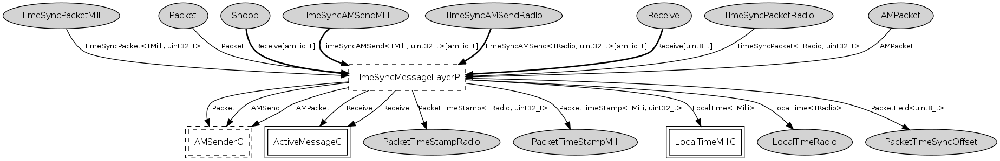

Component: tos.lib.rfxlink.layers.TimeSyncMessageLayerC
generic configuration TimeSyncMessageLayerC()
Provides
interface
Receive as
Snoop[am_id_t]
interface
TimeSyncAMSend<TMilli, uint32_t> as
TimeSyncAMSendMilli[am_id_t]
interface
TimeSyncAMSend<TRadio, uint32_t> as
TimeSyncAMSendRadio[am_id_t]
Uses
interface
LocalTime<TRadio> as
LocalTimeRadioWiring
